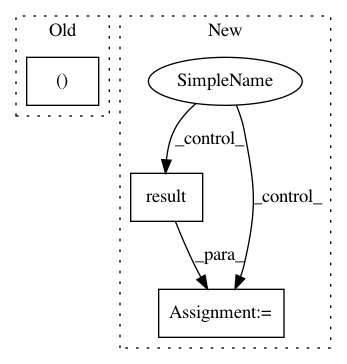

b1d9ac5b8b4d9e47ae146c77347d99e28e9a2701,official/transformer/v2/transformer_main.py,TransformerTask,train,#TransformerTask#,153
Before Change
def train(self):
Trains the model.
params, flags_obj, is_train = self.params, self.flags_obj, True
// Sets config options.
keras_utils.set_session_config(
enable_xla=flags_obj.enable_xla)
After Change
// Runs training steps.
train_steps(iter(train_ds), train_steps_per_eval)
train_loss = train_loss_metric.result().numpy().astype(float)
logging.info("Train Step: %d/%d / loss = %s",
i * flags_obj.steps_between_evals, flags_obj.train_steps,
train_loss)
In pattern: SUPERPATTERN
Frequency: 3
Non-data size: 3
Instances
Project Name: tensorflow/models
Commit Name: b1d9ac5b8b4d9e47ae146c77347d99e28e9a2701
Time: 2019-08-16
Author: hongkuny@google.com
File Name: official/transformer/v2/transformer_main.py
Class Name: TransformerTask
Method Name: train
Project Name: vatlab/SoS
Commit Name: 92d26a01d73f0bc00405f51324756ae16b9f7d4a
Time: 2017-04-16
Author: ben.bog@gmail.com
File Name: sos/sos_task.py
Class Name: TaskEngine
Method Name: run
Project Name: pythonstock/stock
Commit Name: 04d0a9bbfc085d244ee5abed1e4591202a8bd4cb
Time: 2017-10-26
Author: yhy
File Name: web/minstServingHandler.py
Class Name:
Method Name: do_inference